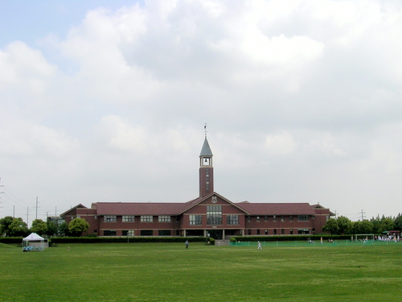

덜위치 칼리지 상하이 캠퍼스 · 사진: JosephineCTY / Wikimedia Commons, CC BY-SA 3.0
덜위치 칼리지 상하이(Dulwich College Shanghai) — 영국식으로 시작해 IB로 끝나는 학교
1. 덜위치 칼리지 상하이는 어떤 학교인가
· 배경 — 영국 런던의 덜위치 칼리지(Dulwich College) 이름을 쓰는 국제학교로 알려져 있습니다.
· 캠퍼스 — 푸둥 캠퍼스는 2003년, 푸시(민항구) 캠퍼스는 2016년에 문을 연 것으로 알려져 있습니다. 상하이는 황푸강을 사이에 두고 푸둥과 푸시 생활권이 나뉘어, 거주지에 따라 통학 캠퍼스가 갈립니다.
· 학년 — 유아 과정부터 Year 13(고등 마지막 학년)까지 운영하는 통학형 학교로 알려져 있습니다.
· 교육과정 — 초등·중등은 영국 국가교육과정, Year 10~11에 IGCSE, Year 12~13에 IB 디플로마(DP)로 이어지는 것으로 알려져 있습니다. IGCSE는 Edexcel·Cambridge 시험 보드 과목이 개설되는 것으로 알려져 있습니다.
· 중국어 — 모국어·제2언어·외국어처럼 수준을 나눈 중국어(보통화) 과정이 있는 것으로 알려져 있습니다.
상하이에서 한국 가정이 자주 함께 놓고 보는 세 학교를 고등 마지막 2년 기준으로 비교하면 이렇습니다.
| 구분 | 덜위치 칼리지 상하이 | 상하이 아메리칸 스쿨 | 콘코디아 상하이 |
|---|---|---|---|
| 계열 | 영국식 | 미국식 | 미국식 |
| 중등(중학) 과정 | 영국 국가교육과정 → IGCSE | 미국식 미들스쿨 | 미국식 미들스쿨 |
| 고등 마지막 2년 | IB 디플로마 | AP · IB 디플로마 선택 | 미국식 + AP |
| 학년 표기 | Year(영국식) | Grade | Grade |
| 한국 학생 관문 | IGCSE 서술형 → DP 과목 설계 | AP·IB 트랙 결정 | 루브릭 채점 과제·발표 |
※ 개설 과목·학년 구분·모집 일정은 바뀔 수 있습니다. 학교 요강을 직접 확인하세요. 학비·정원·합격률 등 변동 수치는 이 글에서 다루지 않습니다. 상하이 미국식 두 학교는 상하이 아메리칸 스쿨·콘코디아 상하이 글에 따로 정리했습니다.
2. 먼저 헷갈리는 것 — Year와 Grade
영국식 학교는 Year, 미국식 학교는 Grade로 학년을 셉니다. 보통 Year에서 1을 빼면 미국식 Grade에 해당합니다. Year 10이면 미국식 G9, Year 12면 G11 정도로 보면 됩니다.
영국 국가교육과정. 과목이 넓게 열려 있고, 영어로 문단을 쓰는 습관이 이때 잡힙니다.
IGCSE. 과목을 골라 2년간 공부하고 외부 시험으로 마무리합니다. → IGCSE 과목 선택
IB 디플로마. 6과목(HL·SL) + Core(EE·TOK·CAS). 대학이 보는 성적입니다. → IB DP 점수
편입 상담에서 학년을 한 칸 잘못 잡아 서류를 준비하는 일이 의외로 많습니다. Year 표기부터 확인하고 시작하세요.
3. 한국(주재원) 학생이 겪는 어려움
· IGCSE는 "답만 맞으면" 끝나지 않는다. 영국식 시험은 문항마다 배점에 맞춘 분량과 형식이 정해져 있습니다. 같은 내용을 알아도 근거를 몇 개 쓰고 어떻게 연결하느냐에서 점수가 갈립니다.
· IGCSE → IB의 방식 전환. IGCSE는 시험으로 정리되는 반면 IB 디플로마는 과제(IA)·에세이·구술까지 이어집니다. 두 방식의 차이를 모르고 Year 12를 맞으면 첫 학기가 그대로 흔들립니다.
· 과목을 줄이려다 DP에서 좁아진다. IGCSE에서 과학·수학을 가볍게 골라두면, 2년 뒤 DP에서 HL로 올릴 수 있는 선택지가 줄어듭니다.
· 영어로 된 수학. 알지브라 개념을 영어 용어로 이해하고, 풀이 과정(show your work)을 영어로 적어야 합니다. 계산이 맞아도 과정 점수를 못 받는 경우가 많습니다.
· 중국어가 한 과목 더. 수준별로 들어가지만, 영어가 아직 올라오는 시기에 중국어까지 겹치면 시간 배분이 먼저 무너집니다.
4. 그래서 이렇게 준비합니다
📖 영어과외 — IGCSE 답안과 IB 에세이
IGCSE는 배점에 맞춰 쓰는 연습이 먼저입니다. 4점짜리 문항에 두 줄만 쓰면 아는 것과 상관없이 점수가 안 나옵니다. 주장 → 근거 → 분석 → 연결의 뼈대를 잡고 실제 기출 형식으로 첨삭하면서, Year 12에 들어가기 전에 IB식 긴 글로 옮겨 탑니다. 리딩이 약하면 원서 독해·아카데믹 어휘를 함께 잡습니다. (영어 공부법 참고)
📐 수학과외 — 알지브라와 서술형 풀이
알지브라·지오메트리 용어를 영어로 연결하고, 풀이 과정을 영어 문장으로 적는 훈련을 합니다. IGCSE 수학에서 단계별 점수(method mark)를 놓치지 않는 습관을 들여두면, DP 수학(AA/AI)의 서술 평가로 그대로 이어집니다. (알지브라 공부법·IB DP 참고)
🗺️ 과목 설계 — IGCSE에서 DP를 내다보기
진로가 이공계 쪽이면 IGCSE 단계에서 수학·과학을 DP HL로 올릴 수 있는 수준으로 유지해두는 편이 안전합니다. 아직 진로가 열려 있다면 과목 폭을 좁히지 않는 쪽으로 잡습니다. 국제학교 입학 준비 총정리에 학년별 로드맵을 정리해 두었습니다.
5. 상하이의 강점 — 시차 1시간 화상과외
상하이는 한국과 시차가 1시간이라 방과 후 화상 1:1 수업을 붙이기 좋습니다. 현지에 IGCSE·IB를 한국어로 짚어 줄 강사를 찾기 어려운 만큼, 아이의 실제 과제와 시험지를 화면에 놓고 답안 형식부터 고치는 방식이 가장 빠릅니다. 상하이 전반 안내는 상하이 국제학교 과외에 정리했습니다.
정리
덜위치 칼리지 상하이는 영국식으로 시작해 IB 디플로마로 끝나는 구조로 알려진 학교입니다. ① Year·Grade 학년 환산부터 확인하고 ② IGCSE는 배점에 맞춘 답안, ③ 수학은 영어 용어 + 과정 서술, ④ 과목은 2년 뒤 DP를 보고 고르는 것 — 이 넷이 핵심입니다. 30분 무료 상담으로 우리 아이 학년부터 점검해 보세요.